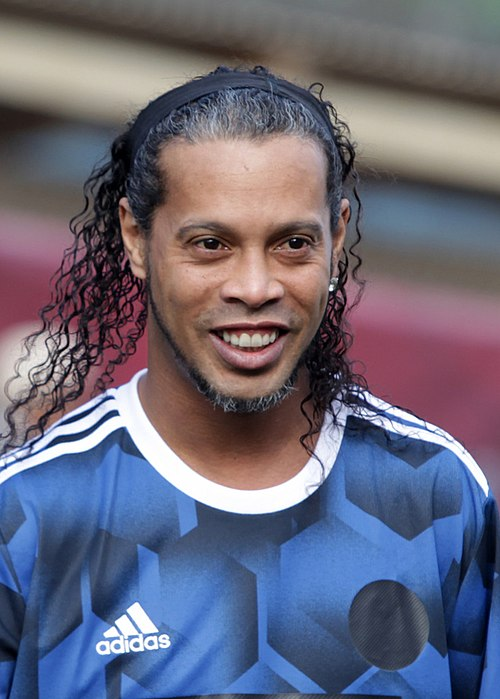

Ronaldinho
бразильський футболіст. Нині — офіційний посол клубу «Барселона». Його основна позиція — атакувальний півзахисник або нападник. Роналдінью зіграв 97 ігор за збірну Бразилії, в яких забив 33 м'ячі. Чемпіон світу 2002 року. Володар «Золотого м'яча» та найкращий гравець світу за версією ФІФА 2005 року.
Інформація
Життєпис
Роналдінью народився в Порту-Алегрі. Футболом захопився з дитинства і почав виступати за команди різних вікових груп у місцевому клубі «Греміу». Тогочасним тренером юнацької команди «Ґреміу» був Луїс Феліпе Сколарі — майбутній тренер бразильської національної збірної на ЧС 2002. 1997 року Роналдінью став найкращим бомбардиром на чемпіонаті світу серед юнаків до 17 років, а через рік дебютував у «дорослому» футболі, зігравши п'ять матчів за основну команду «Греміу».
Проблеми із законом
Роналдінью завершив кар'єру в січні 2018 року, тоді ж був позбавлений закордонного паспорта за несплату податків. Також колишньому футболістові був призначений штраф у 8,5 млн реалів (понад $2,2 млн) за порушення вимог природоохоронного законодавства при будівництві пірсу на березі озера, де розташований будинок його сім'ї. У березні 2020 року Роналдінью та його брат пред'явили в аеропорту Асунсьйона (Парагвай) підроблені паспорти. 4 березня 2020 року в готельному номері братів пройшов обшук, поліція виявила фальшиві документи. 6 березня колишній футболіст був заарештований.[2]